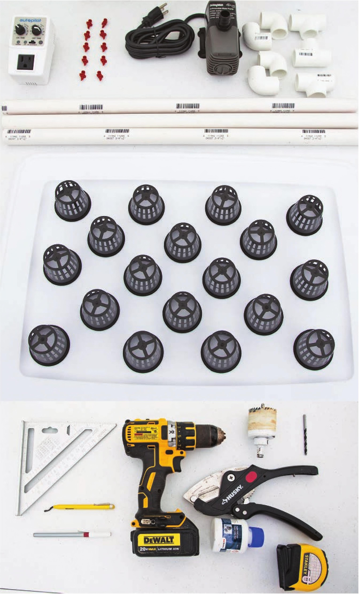

HOW TO BUILD A HIGH-PRESSURE AEROPONIC SYSTEM MATERIALS & TOOLS Frame 1 23 V2" L x 1 67/8" W x 1 2V4" H storage tote with Lid 18 2" net pot Irrigation 6' %" PVC pipe 4 3/4m PVC elbow 3 3/4n PVC tee 1 Submersible water pump, 400 GPH PVC glue 10 360° mister, flow rate 31.4 GPH at 20 PSI 1 Outlet timer Tools Permanent marker Drill 2" hole drill bit Deburring tool 11/64n brad point drill bit Titanium step drill bit with Vs" increments from W to IW Ratcheting PVC cutter (or hacksaw) Spray paint (if not using an opaque tote) Safety Equipment Work gloves Eye protection 108 DIY HYDROPONIC GARDENS
